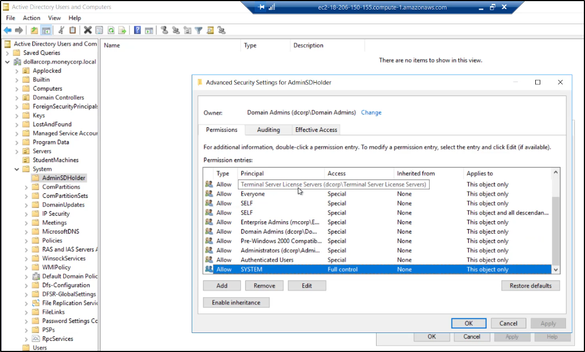
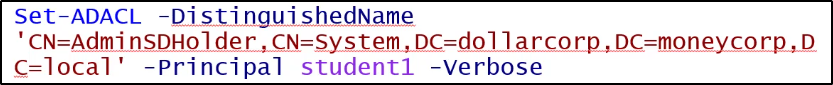

AdminSDHolder
Risiede in un System Container di un dominio
ed è usato per controllare i permessi, usando ACL,
per un certo gruppo built-in privilegiato
(chiamati Protected Groups)
Il servizio Security Descriptor Propagator (SDPROP)
viene eseguito ogni ora e compara le ACL
dei Protected Groups e dei suoi membri con le ACL
di AdminSDHolder: tutte le differenze sono sovrascritte
nell'oggetto ACL

Ecco i Protected Groups:

Ecco una lista dei gruppi e di cosa possono abusare
(questi gruppi possono loggare in modo locale sul DC)

Supponi che qualcuno abbia avuto accesso al Dominio,
e che abbia accesso da Admin.
Per bloccare magari un potenziale attaccante che abbia
creato un account con più permessi del necessario,
il Security Descriptor Propagator (SDPROP)
si propaga e riassegna i permessi dei gruppi originali
agli utenti.
Se invochiamo Invoke-SDPropagator sul Domain Controller,
sovrascriviamo la potenziale ACL compromessa
con una nostra ACL dei Protected Groups.

Questo vuol dire che se modifichiamo la
ACL di AdminSDHolder, possiamo creare
ACL nei gruppi protetti a nostra scelta!
Ok, ora diamo un occhiata
su come effettuare questa operazione da remoto!
Per farlo, possiamo usare i 2 nostri strumenti di base:
Ecco come aggiungere un utente da pieni permessi
(FullControl) sull'AdminSDHolder!
(I comandi devono essere eseguiti da Domain Admin!)
Poweview:

ADModule:


Ora è possibile caricare il modulo per effettuare il Security Descriptor Propagator (SDPROP)
in una sessione sul dominio:

Ecco altri permessi interessanti (ResetPassword, WriteMembers)
per un utente nel AdminSDHolder
Powerview:

ADModule:

Ecco come runnare a mano (visto pure in comandi precedenti)
il Security Descriptor Propagator (SDPROP)


Controllare i permessi dei Domain Admins.
Utile per vedere se i permessi sono stati cambiati correttamente!
(Powerview, da utente normale)

ADModule:


Abusare il FullControl di un utente:
Aggiungiamo un utente al gruppo dei Domain Admins.
ATTENZIONE: Non è raccomandato perché è noisy,
ma è comunque possibile!
Powerview:

ADModule:


Possiamo abusare anche dell'opzione
di ResetPassword:
Possiamo perfino resettare una password
ad un Domain Admin!
Poweview:

ADModule: